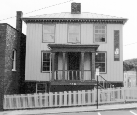
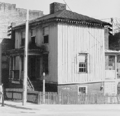

115 West Johnson Street
Staunton, Virginia
 
-
Constructed:
- 1854-1856
-
Original Use:
- Residence
-
Ownership History:
- Original owner, Archibald Stuart; inherited by son, Alexander H.H. Stuart in 1860; value initially assessed at $2,650.
-
Number of Stories:
- 2, plus basement.
-
Architectural Style:
- vernacular.
-
Exterior Features:
- scalloped bargeboard cornice trim; 6/6 windows; hipped roof; porch extends one story over entrance.
-
Interior Features:
- simple mid-nineteenth century woodwork.